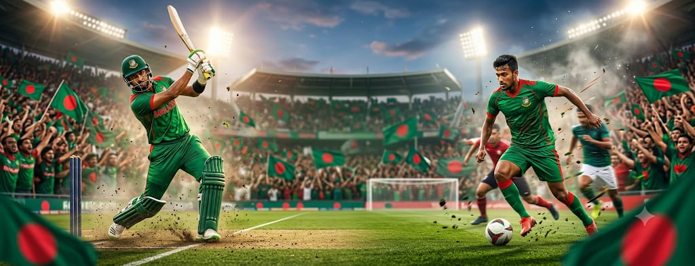
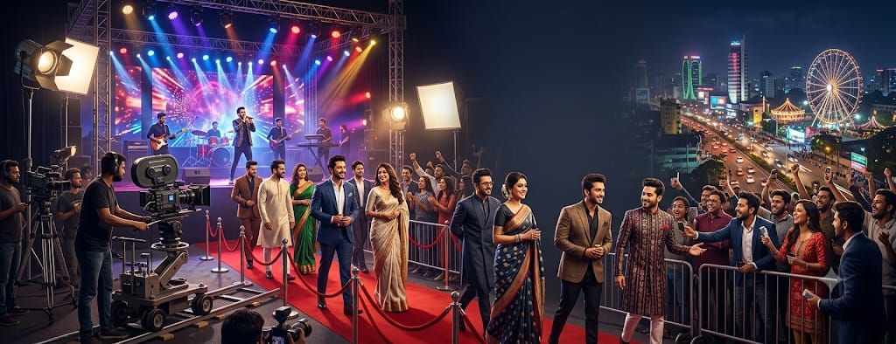

বাংলা সংবাদ — সত্য ও নির্ভরযোগ্য খবর
বাংলা সংবাদ
সর্বশেষ সংবাদ সবার আগে
তারিখ লোড হচ্ছে...
হোম
জাতীয়
রাজনীতি
আন্তর্জাতিক
অর্থনীতি
খেলাধুলা
বিনোদন
প্রযুক্তি
আরও
ব্রেকিং নিউজ:
আজকের সর্বশেষ গুরুত্বপূর্ণ খবর এখানে স্ক্রোল হবে... দেশের অর্থনীতি সচল রাখতে নতুন মেগা প্রকল্প অনুমোদন... বিশ্ব জলবায়ু সম্মেলনে বড় চুক্তির ঘোষণা...
খবর লোড হচ্ছে...
সর্বশেষ খবর
জাতীয়
দেশের সর্বশেষ খবর ও গুরুত্বপূর্ণ আপডেট
রাজনীতি
রাজনীতির নতুন খবর ও সর্বশেষ পরিস্থিতি
আন্তর্জাতিক
বিশ্বের গুরুত্বপূর্ণ ঘটনা ও সর্বশেষ সংবাদ

খেলাধুলা
খেলার মাঠের সর্বশেষ খবর ও আপডেট

বিনোদন
বিনোদন জগতের নতুন খবর ও আপডেট
প্রযুক্তি
প্রযুক্তি দুনিয়ার সর্বশেষ খবর